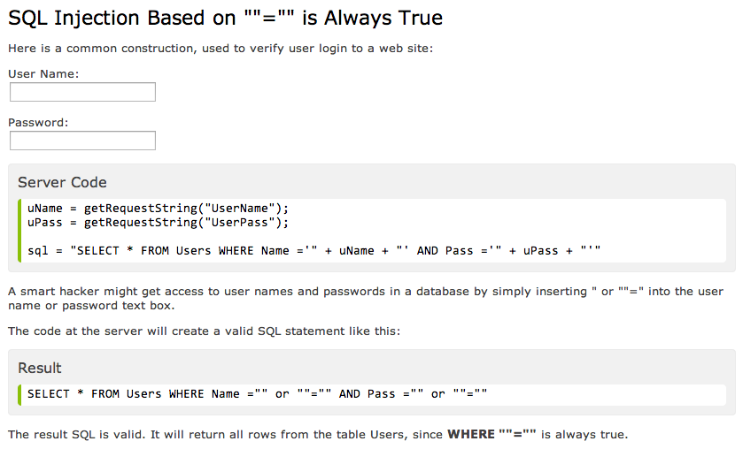

An SQL injection attack can leave your data vulnerable to unauthorized alteration, and can also expose private data such as social security or credit card information. Using this malicious technique, hackers can inject SQL commands (usually via web page input) and seriously compromise the security of a web application. Essentially, an injection attack means that someone can steal or make changes to your data.
Any field within a web application that accepts user input and performs a database query is susceptible to attack. This can include login pages, sign up forms and shopping cart checkouts. Your customer login field, for example will directly query your customer database, and with the right commands entered into that field, all of the data in that customer database could be altered or accessed.
Hackers use specific SQL commands to bypass the regular login page. Keep in mind that this is only possible if the web app's inputs have not been "sanitized", meaning that there is a block in place to prevent such commands from being effective unless they are initiated by an administrator. This can be difficult though, as there may be several different ways of accessing the database through customer-facing forms that the developer may not have anticipated.
One example of how an injection can gain access is based on the premise that an injection based on "=" always evaluates to true. By including a statement like "1=1", or "x=x" into a username or password field, depending on the level of sanitization of the sites, someone might be able to access the database.
There are several other ways a hacker could manipulate SQL code to gain access to information from a user-facing field, and the best guard against these injection attacks is to use something called SQL parameters, which are values that are added to an SQL query at execution time, in a controlled manner." One method of establishing parameters is to only allow an input field to accept certain characters. Prepared Statements and Parameterized Queries define the SQL code that could be used in an attack so that the database can tell the difference between code and data. For example, if your app will only accept upper and lowercase letters in the name field, attempting an injection with any character besides a letter (like "=") will result in an error, not in a hack. The database will not even be queried since the type of input will be restricted.
A couple more techniques for fighting against SQL injection attacks are: